Screenshot

2 baris hero dikenali dari ikon; dianalisa: semua baris sebagai satu papan. Crystal tidak terlihat dari ikon: isi --crystals bila ada.
Papan: Dauntless 6, Stargazer 4, Mistbender 3
 Karina
Karina  Lolita
Lolita  Alice
Alice  Franco
Franco  Hilda
Hilda  Aldous
Aldous  Uranus
Uranus  Mathilda
Mathilda  Nana
Nana  Lunox
Lunox
Go Go Card terdeteksi: Aamon's Power Payday Jump the Gun+
Ringkasan
Sinergi aktif
 Dauntless 6
Dauntless 6 Stargazer 4
Stargazer 4 Mistbender 3
Mistbender 3 Astro Power 2
Astro Power 2 Kishin 2
Kishin 2
Slot & biaya
10/10 hero di Level 10 · total 34 Gold harga dasar · crystal: Dauntless
Commander
 Aamon (Strategi)
Aamon (Strategi)
Catatan otomatis
- Belum aktif: Bruiser 1/2 (Aldous); Enchanted Tales 1/2 (Mathilda); SPECTRE 1/2 (Alice); Starbelle 1/2 (Lolita); Swiftblade 1/2 (Karina); Weapon Master 1/2 (Franco).
- 2 hero 5 Gold (Alice, Nana): masing-masing hanya 9 salinan di pool; ★2 butuh 3 salinan.
- Karina: Patch 7.2 (server) Hybrid ATK ★2/★3: 215/285 → 200/260
- Mathilda: Patch 7.2 (server) Hybrid ATK ★2/★3: 155/210 → 145/195
- Lunox: Patch 20/10 (server) Hybrid ATK ★2: 200 → 185
Hero
| Hero | Harga | Sinergi | Stat | Skill |
|---|---|---|---|---|
| Karina | 3 Gold | Astro Power, Swiftblade, Stargazer | ★2: HP 4635, ATK 200* | Dance of Death |
| Lolita | 4 Gold | Starbelle, Dauntless | ★2: HP 7330, ATK 260 | Noumenon Blast |
| Alice | 5 Gold | SPECTRE, Dauntless | ★2: HP 7180, ATK 345 | Throne of Ruin |
| Franco | 3 Gold | Kishin, Dauntless, Weapon Master | ★2: HP 5525, ATK 205 | Hook Shock |
| Hilda | 3 Gold | Astro Power, Dauntless | ★2: HP 5935, ATK 205 | Power of Wildness |
| Aldous | 3 Gold | Mistbender, Bruiser | ★2: HP 4635, ATK 215 | Contract: Transform |
| Uranus | 1 Gold | Mistbender, Dauntless | ★2: HP 3655, ATK 160 | Energy Awakening |
| Mathilda | 3 Gold | Enchanted Tales, Stargazer | ★2: HP 3905, ATK 145* | Guiding Wind |
| Nana | 5 Gold | Mistbender, Stargazer | ★2: HP 6415, ATK 285 | Magic Boomerang |
| Lunox | 4 Gold | Kishin, Stargazer | ★2: HP 5580, ATK 185* | Power of Chaos: Darkening |
* = angka Patch server (bukan file game).
Sinergi
| Sinergi | Jumlah | Tingkat aktif | Tingkat berikutnya |
|---|---|---|---|
| Dauntless | 6 (+1 crystal) | 6: Semua rekan mendapatkan Shield sebesar 20% Max HP. Hero Dauntless mendapatkan Shield tambahan sebesar 85% Max HP. | maks |
| Stargazer | 4 | 4: Semua rekan memulihkan 4 Mana setiap detik. Hero Stargazer memulihkan 12 Mana tambahan setiap detik. | +2 ke 6: Eudora, Luo Yi |
| Mistbender | 3 | 3: Mendapatkan 2 Spirit Sand setelah menggunakan skill. | maks |
| Astro Power | 2 | 2: Mendapatkan 10% Peningkatan DMG. Astro Sovereign mendapatkan 20% Peningkatan DMG dan 5% Hybrid Lifesteal tambahan. | +2 ke 4: Minotaur, Martis, Irithel, Odette |
| Kishin | 2 | 2: Mendapatkan 1 Equipment Kishin. Hero Kishin mendapatkan 12 Hybrid DEF. | +2 ke 4: Dyrroth, Angela, Karrie, Lancelot |
 Bruiser Bruiser | 1 | belum aktif | +1 ke 2: Dyrroth, Belerick, Paquito, Yin, Badang |
 Enchanted Tales Enchanted Tales | 1 | belum aktif | +1 ke 2: Belerick, Atlas, Vexana |
 SPECTRE SPECTRE | 1 | belum aktif | +1 ke 2: Phoveus, Granger, Paquito, Saber, Gord |
 Starbelle Starbelle | 1 | belum aktif | +1 ke 2: Cici, Miya, Zhuxin, Edith, Fanny |
 Swiftblade Swiftblade | 1 | belum aktif | +1 ke 2: Yi Sun-shin, Natalia, Saber, Gusion, Fanny |
 Weapon Master Weapon Master | 1 | belum aktif | +1 ke 2: Cici, Martis, Suyou, Zilong, Thamuz |
Jalur ultra
- Astro Power 10: butuh +8 lagi (Minotaur, Martis, Irithel, Odette + crystal). Tingkat 10: Mendapatkan 100% Peningkatan DMG. Satu Astro Sovereign tambahan akan muncul di antara hero Astro Power lainnya. Kedua Astro Sovereign mendapatkan 300% Peningkatan DMG, 40% Hybrid Lifesteal, dan 600% Max HP tambahan. Basic ATK mereka menciptakan Astro Link, memberikan True DMG sebesar 600% Adaptive ATK ke target dan 4 lawan di sekitar.
- Kishin 10: butuh +8 lagi (Dyrroth, Angela, Karrie, Lancelot + crystal). Tingkat 10: Equipment ditingkatkan menjadi Supreme. Hero Kishin mendapatkan 600 Hybrid DEF.
Ultra faksi 6 hero = 6 hero + 1 crystal Pilihan + 3 crystal biasa (sumber acak).
Stok & peluang toko (Level 10)
| Harga | Hero di lineup | Salinan per hero | Peluang toko |
|---|---|---|---|
| 1 Gold | Uranus | 25 | 6% |
| 2 Gold | - | 21 | 12% |
| 3 Gold | Karina, Franco, Hilda, Aldous, Mathilda | 18 | 22% |
| 4 Gold | Lolita, Lunox | 14 | 35% |
| 5 Gold | Alice, Nana | 9 | 25% |
★2 = 3 salinan, ★3 = 9 salinan; pool dipakai bersama semua pemain.
Crystal dari Go Go Box
Peluang crystal satu sinergi tertentu (mis. Dauntless, Stargazer, Astro Power) muncul di Go Go Box, bila bobotnya sama:
| Go Go Box | Crystal sinergi | Peluang sinergi tertentu |
|---|---|---|
| II-6 | 1–2 dari 15 | 7–13% |
| III-6 | 2–2 dari 15 | 13–13% |
| IV-6 | 3–4 dari 15 | 20–27% |
| V-6 | 3–4 dari 15 | 20–27% |
| VI-6 | 3–4 dari 15 | 20–27% |
| VII-6 | 3–4 dari 15 | 20–27% |
| VIII-6 | 3–4 dari 15 | 20–27% |
Urutan memilih dari HP terendah: pemain HP tinggi bisa kehabisan.
Commander Aamon
- Lv 1+ Pasif: Blade of Resonance — Mendapatkan 1 Mirror Device pada awal pertandingan. Saat Hero mencapai Bintang 2, kamu akan mendapatkan 1 Shard. 7 Shard akan otomatis dikonversi menjadi 1 Mirror Device. Kamu bisa mendapatkan hingga 2 Mirror Device.
- Lv 2+ Pasif: Skybreaker Blade — Mendapatkan 12 Gold tambahan setiap kali Mirror Device dibuat.
- Kartu Power Aamon's Power — Mendapatkan 4 Gold setiap kali Hero mencapai Bintang 2 (hingga total 20 Gold).
Go Go Card terkait
| Kartu | Tingkat | Efek |
|---|---|---|
| Power | Mendapatkan 4 Gold setiap kali Hero mencapai Bintang 2 (hingga total 20 Gold). | |
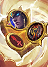 Blessing Weapon Master | Oranye | Mendapatkan Magic Crystal Weapon Master, War Axe, dan Martis. |
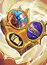 Blessing Bruiser | Oranye | Mendapatkan Magic Crystal Bruiser, Golden Staff, dan Belerick. |
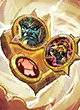 Blessing Dauntless | Oranye | Mendapatkan Magic Crystal Dauntless, Antique Cuirass, dan Balmond. |
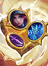 Swiftblade's Blessing | Oranye | Mendapatkan Magic Crystal Swiftblade, Winter Crown, dan Natalia. |
| Oranye | Mendapatkan Magic Crystal Stargazer, Ice Queen Wand, dan Luo Yi. | |
| Oranye | Mendapatkan Magic Crystal Starbelle, Peti Equipment, dan Miya. | |
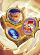 SPECTRE's Blessing | Oranye | Mendapatkan Magic Crystal SPECTRE, Peti Equipment, dan Granger. |
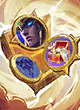 Astro Power's Blessing | Oranye | Mendapatkan Magic Crystal Astro Power, Peti Equipment, dan Martis. |
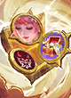 Kishin's Blessing | Oranye | Mendapatkan Magic Crystal Kishin, Peti Equipment, dan Angela. |
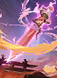 Kishin Unbound | Ungu | Tingkatkan Equipment eksklusif Kishin ke versi yang diperkuat dan dapatkan 5 kesempatan refresh Toko gratis. |
| Ungu | Mendapatkan Magic Crystal Astro Power dan Martis. | |
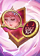 Kishin's Badge | Ungu | Mendapatkan Magic Crystal Kishin dan Angela. |
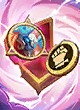 Badge Bruiser | Ungu | Mendapatkan Magic Crystal Bruiser dan Belerick. |
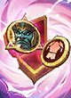 Badge Dauntless | Ungu | Mendapatkan Magic Crystal Dauntless dan Balmond. |
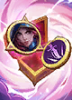 Swiftblade's Badge | Ungu | Mendapatkan Magic Crystal Swiftblade dan Natalia. |
| Ungu | Mendapatkan Magic Crystal Stargazer dan Luo Yi. | |
| Ungu | Mendapatkan Magic Crystal Starbelle dan Miya. | |
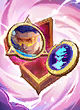 SPECTRE's Badge | Ungu | Mendapatkan Magic Crystal SPECTRE dan Granger. |
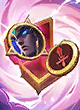 Badge Weapon Master | Ungu | Mendapatkan Magic Crystal Weapon Master dan Martis. |
| Ungu | ATK Hero Bruiser berpeluang 20% untuk menyebabkan stun ke target selama 1.5 detik. | |
| Ungu | Saat memiliki Shield, Hero Dauntless membesar dan mendapatkan 3% HP & Hybrid ATK setiap detik. Pada detik ke-5, efek ini mencapai batas maksimum dan memberikan 8% HP & Hybrid ATK tambahan. | |
| Ungu | Setiap kali menggunakan skill, Hero Weapon Master memberikan Physical DMG sebesar 130% dari total Physical ATK mereka ke lawan di sekitar. | |
| Ungu | Ketika Hero Stargazer menggunakan skill, mereka memberikan Magic DMG sebesar 65% dari Magic ATK-nya ke 2 lawan acak. | |
| Ungu | Ketika Hero Swiftblade berhasil mengeliminasi lawan, dia akan memasuki mode Conceal, dan ATK berikutnya akan memberikan Bonus Adaptive DMG sebesar 180% dari nilai Hybrid ATK-nya yang lebih tinggi. |
Equipment terkait sinergi
| Equipment | Jenis | Efek |
|---|---|---|
 Guren Chakram Guren Chakram | Eksklusif Sinergi | +20% Lifesteal; +20% Spell Vamp; Guren: Pembawa Equipment mendapatkan Peningkatan DMG. Tingkatkan tier Equipment untuk memperkuatnya. Mortal: Mendapatkan 25% Peningkatan DMG. Refined: Mendapatkan 35% Peningkatan DMG. Arcane: Mendapatkan 55% Peningkatan DMG. Supreme: Mendapatkan Guren's Guard, 150% Peningkatan DMG, dan 65% HP tambahan. (Equipment Eksklusif Sinergi Kishin) |
 Justice Sword Justice Sword | Eksklusif Sinergi | +20% Hybrid ATK; Justice: Setiap 5 detik, memanggil Rain of Swords untuk menyerang area dengan lawan terbanyak. Tingkatkan Equipment untuk memperkuatnya. Mortal: Memberikan 8% True DMG Hybrid ATK. Refined: Memberikan 15% True DMG Hybrid ATK. Arcane: Memberikan 20% True DMG Hybrid ATK. Supreme: Memberikan 100% True DMG Hybrid ATK. 3 detik setelah pertarungan dimulai, Giant Sword jatuh, memberikan 500% True DMG Hybrid ATK ke semua lawan. (Equipment Eksklusif Sinergi Kishin) |
 Lightstick Lightstick | Eksklusif Sinergi | +25% Hybrid ATK; Cheer: Saat pertarungan dimulai, Fan dengan Lightstick memberikan bonus Hybrid ATK kepada Hero Starbelle dan diri sendiri berdasarkan Hybrid ATK-nya saat ini. 2 Starbelle: 15% dari Hybrid ATK Fan. 4 Starbelle: 25% dari Hybrid ATK Fan. 6 Starbelle: 50% dari Hybrid ATK Fan. 10 Starbelle: 100% dari Hybrid ATK Fan. (Equipment Eksklusif Sinergi Starbelle) |
 Nether Claw Nether Claw | Eksklusif Sinergi | +20% Max HP; Nether: Pembawa Equipment mendapatkan HP tambahan. Memanggil Nether Claw untuk menyebabkan stun ke lawan di depan. Tingkatkan tier Equipment untuk memperkuatnya. Mortal: Mendapatkan 25% HP tambahan dan menyebabkan stun ke lawan di depan selama 1 detik. Refined: Mendapatkan 35% HP tambahan dan menyebabkan stun ke lawan di depan selama 1 detik. Arcane: Mendapatkan 50% HP tambahan dan menyebabkan stun ke lawan di depan selama 2 detik. Supreme: Mendapatkan 200% HP tambahan dan menyebabkan stun ke semua lawan selama 3 detik. (Equipment Eksklusif Sinergi Kishin) |